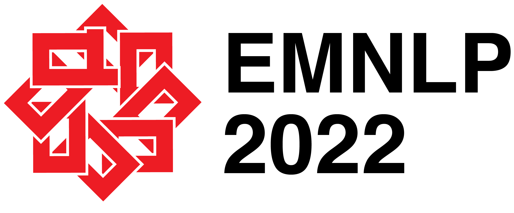
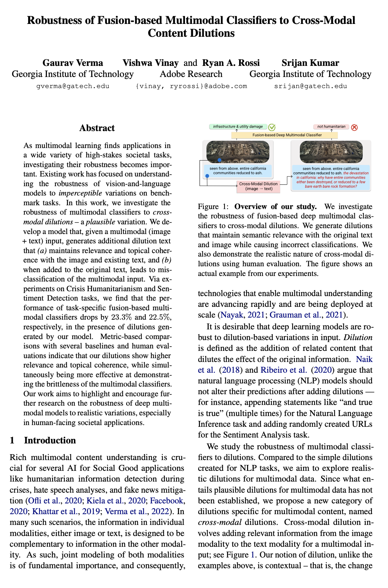

Cross-Modal Content Dilutions
[Paper] [GitHub] [Slides]
Gaurav Verma, Vishwa Vinay, Ryan A. Rossi, and Srijan Kumar
Georgia Institute of Technology, Adobe Research
⭐ Slides from EMNLP 2022 Oral are now available [slides (pdf)]
⭐ Code and Colab notebook released [GitHub link]
⭐ Paper accepted at EMNLP 2022 (main) [paper pdf]

|
Overview of our study: We investigate the robustness of fusion-based deep multimodal classifiers to cross-modal dilutions. We generate dilutions that maintain semantic relevance with the original text and image while causing incorrect classifications. We also demonstrate the realistic nature of cross-modal dilutions using human evaluation. The figure shows an actual example from our experiments. |
| As multimodal learning finds applications in a wide variety of high-stakes societal tasks, investigating their robustness becomes important. Existing work has focused on understanding the robustness of vision-and-language models to imperceptible variations on benchmark tasks. In this work, we investigate the robustness of multimodal classifiers to cross-modal dilutions – a plausible variation. We develop a model that, given a multimodal (image + text) input, generates additional dilution text that (a) maintains relevance and topical coherence with the image and existing text, and (b) when added to the original text, leads to misclassification of the multimodal input. Via experiments on Crisis Humanitarianism and Sentiment Detection tasks, we find that the performance of task-specific fusion-based multimodal classifiers drops by 23.3% and 22.5%, respectively, in the presence of dilutions generated by our model. Metric-based comparisons with several baselines and human evaluations indicate that our dilutions show higher relevance and topical coherence, while simultaneously being more effective at demonstrating the brittleness of the multimodal classifiers. Our work aims to highlight and encourage further research on the robustness of deep multimodal models to realistic variations, especially in human-facing societal applications. |
Code and Resources
|
Code and Colab: We make the code for training the cross-modal dilution generator (XMD) available. We also release a Colab notebook to load the trained models files to facilitate quick and easy generation of cross-modal dilutions with automated as well as manual keywords. The Google Colab notebook can be accessed here: Colab link Datasets: In this work, we consider two clasiffication tasks that are human-facing and involve user-generated data. Please download the datasets from respective webpages: 1. Crisis humanitarianism (CrisisMMD): https://crisisnlp.qcri.org/crisismmd 2. Emotion classification: https://github.com/emoclassifier/emoclassifier.github.io (if you cannot access the dataset at its original source (proposed in this paper), please contact us for the Reddit URLs we used for our work.) |
|  | Gaurav Verma, Vishwa Vinay, Ryan A. Rossi, Srijan Kumar Robustness of Fusion-based Multimodal Classifiers to Cross-Modal Content Dilutions In Proceedings of the 2022 Conference on Empirical Methods in Natural Language Processing (EMNLP 2022). webpage: https://github.com/claws-lab/multimodal-robustness arXiv: https://arxiv.org/abs/2211.02646 |
Bibtex:
|
|
|